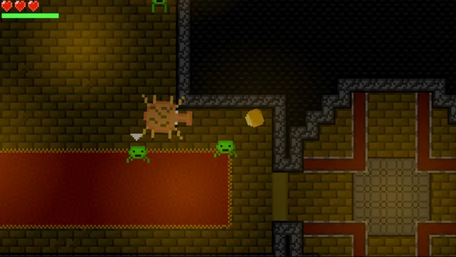
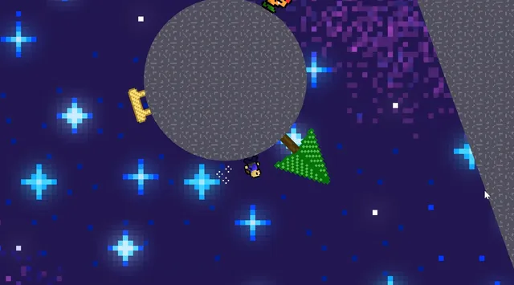
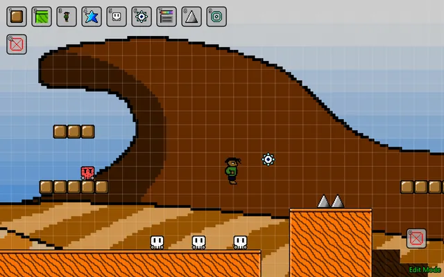
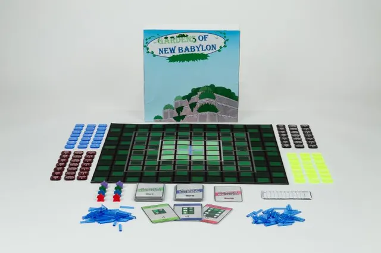
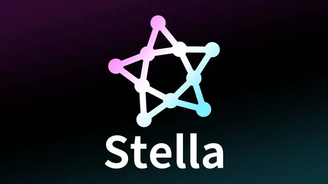
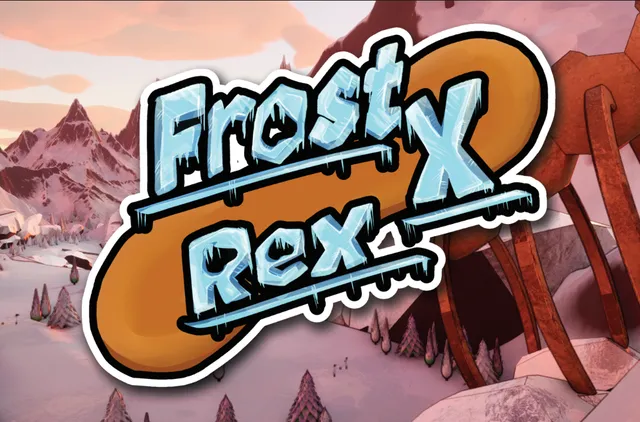

Quick Whips
Apr, 2022 -- Jun, 2022

I'm Anders Halverson. I am currently pursuing a Bachelor's degree in Computer Science with a concentration in Game Design and a minor in Mathematics at University of Wisconsin-Stout. My focus is on applying my programming, game design, and leadership skills to create innovative and fun video games everyone can enjoy.
I'm passionate and dedicated to self-learning, and have worked on several projects through my coursework and personal ambitions. Being at UW-Stout has taught me how to be a good leader and create high-functioning teams.
I spent my early childhood years in Tanzania. When living in Africa, I experienced other cultures, safaris, the Indian Ocean, and poverty. To add to my cultural awareness, I studied Databases in Ireland at the University of Limerick. For three years my parents adopted an Ethiopian teenager, which brought another culture into our household. Cross-cultural understanding has helped me manage diverse teams and enhanced my creative input with game design.
Apr, 2022 -- Jun, 2022

Built in Construct 3, which uses visual scripting structured similarly to JavaScript, I learned the engine's ins and outs by creating a range of small systems and tests before starting this project during my sophomore year of high school.
Before Quick Whips, I already enjoyed math and programming. I made simple projects in Scratch and Java, and taught myself calculus, trigonometry, and basic discrete math concepts when I was younger.
I consider Quick Whips my first major project. Construct 3 is a real game engine used in shipped games. I spent a lot of time researching how it works and asking questions in the forums and Discord server to gain a strong understanding of the engine.
Sep, 2022 -- Nov, 2022

Breath of the Galaxies is a 2D platformer inspired by the physics and gravity mechanics of Super Mario Galaxy, developed in Construct 3. I designed and programmed the entire game solo during my junior year of high school, focusing on smooth physics and responsive controls. Development slowed toward the end due to the engine's limitations, but the project was a major step in learning how to bring ambitious ideas to life within constraints.
Nov, 2024 -- Dec, 2024

Super Short Bros. is a tile-scrolling 2D platformer inspired by Super Mario Bros. 3 and Super Mario Maker, developed in JavaFX. I built it as my final project for Computer Science 2 to demonstrate my understanding of JavaFX, choosing to challenge myself with a full platformer rather than a typical GUI-based application. The game includes player movement, collisions, enemies, level saving/loading, and tile-scrolling, all programmed from scratch.
v0.4.6 was the version I turned in for my university class (Dec, 2024). Since then, I continue to update the project, advancing my skills in Java and game engine development.
Apr, 2025 -- May, 2025

A strategic board game developed as the final project for my Intro to Game Design and Development course. Gardens of New Babylon focuses on forming patterns by managing resources and strategically moving workers, set in a world inspired by the Hanging Gardens. I took on the Designer role, leading the core mechanics and managing the team's workflow. The project involved iterative playtesting, mechanic balancing, and creating a polished, playable prototype.
The game won "Most Innovative Mechanics" at the Stout Game Expo (SGX) Spring 2025.
Dec, 2025 -- Present

Stella Game Engine is a general-purpose 2D game engine programmed in C++ with OpenGL libraries. So far, I've programmed rigid bodies that feature realistic circular and rectangular collisions for both dynamic and static bodies, custom shaders, and a customizable camera.
I plan to use this engine for various games in the future.
Feb, 2026 -- Present

A dinosaur-themed snowboarding game developed in Unreal Engine using C++, created by a team of 8 (4 programmers and 4 artists). I serve as Programming Lead, where I built the core base physics system for snowboard movement and gameplay handling, and contributing to level design in Unreal Editor.
In addition to technical leadership, I create documentation and presentations to ensure clarity and alignment between programming and art teams, working closely with the Art Lead.
The game won "Best Visual Art" at the Stout Game Expo (SGX) Spring 2026.
More to come!